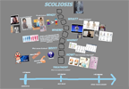

research
The Interface Ecology Lab fosters integrative research projects spanning hardware, software, and theory, producing natural user interfaces, creativity support environments, games,
interaction techniques, visualization algorithms, semantics, programming languages, interactive installations, and evaluation methodologies.
research areas
Body-based interfaces
integrate multi-modal sensing with interaction design and gesture recognition.
We investigate body-based interfaces for human expression in computing, addressing ideation and play.
 Games and Play are fun and creative forms of human experience.
We study emerging culture and media surrounding game play.
We investigate game design through play, culture, interface, and media perspectives.
Games and Play are fun and creative forms of human experience.
We study emerging culture and media surrounding game play.
We investigate game design through play, culture, interface, and media perspectives.
Information-Based Ideation (IBI) is a a theory and methodology for investigating tasks and activities in which people develop new ideas, while digital content serves as support and stimulus.
People engaged in information-based ideation tasks curate— they collect, assemble, annotate, and exhibit.
People engaged in information-based ideation tasks curate— they collect, assemble, annotate, and exhibit.

Information composition is a holistic medium for curating
digital content as a visually and semantically connected whole.
Composition is non-linear and free-form form, breaking out of lists and grids to support the synthesis and emergence of diverse ideas.
Composition integrates rich media curation with web semantics and expressive annotation through text and sketching.
Web
semantics describe and derive significant attributes and relationships of digital content.
We develop and build on an innovative type system for deriving and presenting web semantics for diverse content —e.g., digital libraries, e-commerce, social media— to provide valuable context to users engaged in
information-based ideation and curation.
current projects
 The Art.CHI installation provides a movement-based, spatial and visual interface for navigating a multi-scale information composition, which holistically represents an online art gallery.
The Art.CHI installation provides a movement-based, spatial and visual interface for navigating a multi-scale information composition, which holistically represents an online art gallery.
 TweetBubble
is a chrome extension that helps twitter users follow associational chains of
tweets through #hashtags and @users. People can experience and relate a variety
of content in-context helping them develop multiple perspectives on a topic.
TweetBubble makes browsing a more fun and fluid experience.
TweetBubble
is a chrome extension that helps twitter users follow associational chains of
tweets through #hashtags and @users. People can experience and relate a variety
of content in-context helping them develop multiple perspectives on a topic.
TweetBubble makes browsing a more fun and fluid experience.
TweetBubble uses BigSemantics and Metadata In-Context Expander.
 BigSemantics is an open
source software architecture and language for developing applications that present
interactive web semantics. Developers author wrappers to create semantic types
in a polymorphic type system, or inherit from existing ones for reuse. The
accompanying wrapper repository covers many common types, sources, and use
cases.
Based on BigSemantics, we developed Metadata In-Context Expander (MICE), an example web
application for exploring exploring linked web semantics in one context.
BigSemantics is an open
source software architecture and language for developing applications that present
interactive web semantics. Developers author wrappers to create semantic types
in a polymorphic type system, or inherit from existing ones for reuse. The
accompanying wrapper repository covers many common types, sources, and use
cases.
Based on BigSemantics, we developed Metadata In-Context Expander (MICE), an example web
application for exploring exploring linked web semantics in one context.
prior projects
 We developed a series of digital games for Teaching Team Coordination (TeC).
We began with ethnography of fire emergency response work practice, developing understanding of situated contexts,
and design principles for simulations of team coordination in crisis response.
We mapped real-world actions map to game mechanics: players work together to achieve goals and avoid hazards.
We invented Zero-Fidelity Simulation,
a method that focuses on reproducing the communication and information distribution components of target environments,
to produce engaging, low-cost, and effective educational experiences.
We developed a series of digital games for Teaching Team Coordination (TeC).
We began with ethnography of fire emergency response work practice, developing understanding of situated contexts,
and design principles for simulations of team coordination in crisis response.
We mapped real-world actions map to game mechanics: players work together to achieve goals and avoid hazards.
We invented Zero-Fidelity Simulation,
a method that focuses on reproducing the communication and information distribution components of target environments,
to produce engaging, low-cost, and effective educational experiences.
 S.IM.PL is
our open source initiative for augmenting popular programming languages to
facilitate inter-operation, with an emphasis on simplifying development of
distributed applications that represent the world. The foundation layer, S.IM.PL Serialization, is based
in a language-independent type system encapsulated by
TranslationScopes, and enables cross-language code generation, as well as
de/serialization to XML, JSON, and TLV.
Object-Oriented Distributed Semantic
Services (OODSS) simplifies building distributed applications and services,
which decode message passing using S.IM.PL Translation Scopes, to connect
iPhone, Android, Java, and .Net clients to Java and .Net servers.
BigSemantics also uses S.IM.PL.
S.IM.PL is
our open source initiative for augmenting popular programming languages to
facilitate inter-operation, with an emphasis on simplifying development of
distributed applications that represent the world. The foundation layer, S.IM.PL Serialization, is based
in a language-independent type system encapsulated by
TranslationScopes, and enables cross-language code generation, as well as
de/serialization to XML, JSON, and TLV.
Object-Oriented Distributed Semantic
Services (OODSS) simplifies building distributed applications and services,
which decode message passing using S.IM.PL Translation Scopes, to connect
iPhone, Android, Java, and .Net clients to Java and .Net servers.
BigSemantics also uses S.IM.PL.
Hurricane Recovery: Collecting Locative Media to Rebuild Local Knowledge Engages in an iterative participatory process of reaching out to evacuee communities subsequent to Hurricane Katrina, gathering information about needs and desires, building situated semantics and a locative media collection sensemaking system, and using the system to collect, organize, and re-present images, interviews, and metadata. Digital photographs are connected with GPS sensor data, semantics, a zoomable map interface, and an image clustering algorithm.
 Test Collection
consists of a set of documents, a clearly formed problem that an algorithm is supposed to provide solutions to, and the answers that the algorithm should produce when executed on the documents.
The present research develops an open source Test Collection Digital Library System. The system enables collecting and labeling documents, and publishing the resulting test collections.
Test Collection
consists of a set of documents, a clearly formed problem that an algorithm is supposed to provide solutions to, and the answers that the algorithm should produce when executed on the documents.
The present research develops an open source Test Collection Digital Library System. The system enables collecting and labeling documents, and publishing the resulting test collections.